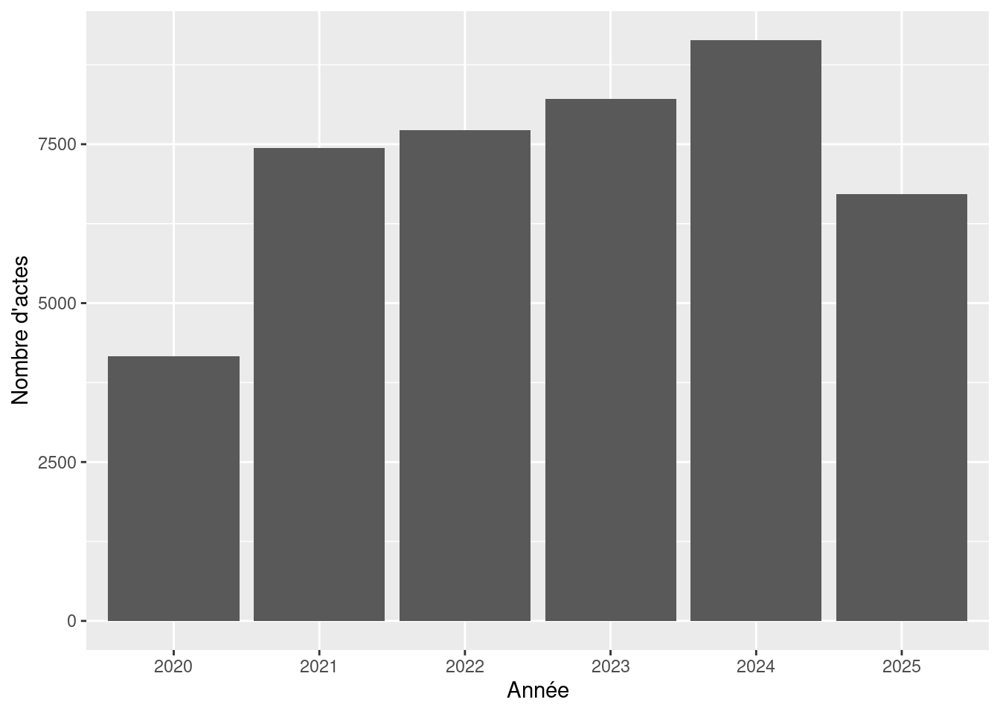

library(readr)
library(dplyr)Création de données géographiques à partir de données peu structurées
Objectif
Cette séance a pour objectif de se remémorer des éléments de syntaxe de R (le chargement des données, la manipulation de tableaux, etc.) et de découvrir une famille d’outils très utiles dans la perspective d’acquérir et de gérer des données : les expressions régulières (qui permettent d’aller récupérer des informations de données textuelles peu structurées).
Pour cela, nous travaillerons sur un projet concret : la construction d’un tableau de données sur les immeubles en péril à Bordeaux à partir de arrêtés publiés par le conseil municipal de la ville.
Nous partons de données brutes : le fichier est téléchargeable ici.
Chargement et inspection des données
Pour le chargement d’un fichier .csv, nous allons utiliser le package {readr} qui optimise la lecture des fichiers. On charge simultanément {dplyr} qui facilite la manipulation de données tabulaires.
Le fichier utilise le point-virgule comme séparateur (comme souvent pour les fichiers issus de producteur de données français), il faut donc le lire avec read_csv2() plutôt qu’avec read_csv().
arretes <- read_csv2("../data/bor_affichage-reglementaire.csv")On peut regarder d’un coup d’œil les dimensions et le contenu du tableau.
glimpse(arretes)Rows: 43,395
Columns: 8
$ Collectivité <chr> "Ville de Bordeaux", "Ville de Bord…
$ `Nature de l'acte` <chr> "Arrêté", "Arrêté", "Arrêté", "Arrê…
$ `Numéro de l'acte` <chr> "202132825", "202133003", "20213300…
$ `Intitulé de l'acte` <chr> "Arrêté temporaire de circulation p…
$ `Date d'affichage` <date> 2021-12-17, 2021-12-17, 2021-12-17…
$ Trigramme <chr> "BOR", "BOR", "BOR", "BOR", "BOR", …
$ `Accès au document` <chr> "https://cdn.scnbdx.fr/web-afresco/…
$ `Accès document avec DCP (2 mois)` <chr> NA, NA, NA, NA, NA, NA, NA, NA, NA,…On visualise ensuite les premières lignes.
head(arretes, n = 2) %>% knitr::kable()| Collectivité | Nature de l’acte | Numéro de l’acte | Intitulé de l’acte | Date d’affichage | Trigramme | Accès au document | Accès document avec DCP (2 mois) |
|---|---|---|---|---|---|---|---|
| Ville de Bordeaux | Arrêté | 202132825 | Arrêté temporaire de circulation pour travaux-Quartier n°3 - Bordeaux Centre-Rue Ausone, de la Rue du Chai des Farines jusqu’au Cours d’Alsace Et Lorraine-1 - Circulation interdite | 2021-12-17 | BOR | https://cdn.scnbdx.fr/web-afresco/BOGABOR/BOR_ARR_202132825.pdf | NA |
| Ville de Bordeaux | Arrêté | 202133003 | Arrêté temporaire de circulation pour travaux-Quartier n°3 - Bordeaux Centre-Rue Colbert, de la Rue Turenne jusqu’à la Rue de la Franchise-1 - Circulation interdite | 2021-12-17 | BOR | https://cdn.scnbdx.fr/web-afresco/BOGABOR/BOR_ARR_202133003.pdf | NA |
On voit que l’essentiel des informations est contenu de manière non-structurée dans la colonne arretes$`Intitulé de l’acte` (qui possède au passage un nom peu pratique à manipuler dans du code). Il y a par ailleurs des colonnes qui ne nous serviront pas.
On sélectionnera et renommera ainsi les colonnes :
arretes <- arretes %>%
select(nature=`Nature de l'acte`,
numero=`Numéro de l'acte`,
intitule=`Intitulé de l'acte`,
date=`Date d'affichage`)Extraction d’informations
L’année de publication des actes
La première extraction que l’on va faire concerne la date de publication des arrêtés afin de voir la période couverte par notre base de données. La colonne arretes$date contient l’information qui nous intéresse avec une granularité temporelle cependant trop fine.
arretes$date[1:10] [1] "2021-12-17" "2021-12-17" "2021-12-17" "2021-12-20" "2022-02-15"
[6] "2022-02-16" "2022-02-14" "2022-02-21" "2022-03-07" "2021-11-16"Pour extraire l’information qui nous intéresse, on peut se focaliser sur les 4 premiers caractères de la date qui correspondent à l’année.
arretes$annee <- substr(arretes$date,1, 4)
arretes_annee <- arretes %>%
group_by(annee) %>%
summarise(n=n())On pourra représenter cette information par un graphique.
library(ggplot2)
ggplot()+
geom_col(data = arretes_annee, aes(x=annee, y=n))+
labs(y="Nombre d'actes",
x="Année")
Les types d’acte
La difficulté principale de l’exercice réside dans l’extraction d’informations non-structurées des chaînes de caractères qui composent le titre des actes. Pour commencer ce travail, on va d’abord en visualiser quelques-unes afin de voir si on peut dégager des éléments de structuration.
arretes$intitule[sample(1:nrow(arretes), 5)][1] "ARRÊTÉ PERMANENT DE CIRCULATION ET DE STATIONNEMENT - Service Coordination- Rue des Carmes en provenance de la rue Jean XXIII commune de Mérignac-AP - Stop"
[2] "ARRÊTÉ TEMPORAIRE DE CIRCULATION - Quartier n°3 - Bordeaux Centre-Rue de la Croix Blanche, de la rue Lachassaigne jusqu'à la place Gabriel Delaunay-1 - Circulation interdite"
[3] "ARRÊTÉ TEMPORAIRE DE CIRCULATION - Quartier n°1 - Bordeaux Maritime-au n°20 rue Marcel Pagnol -1 - Interdiction de stationnement"
[4] "Arrêté temporaire de circulation pour travaux-Quartier n°4 - Saint Augustin/Tauzin/A. Dupeux- Rue du Commandant Charcot-1 - Interdiction de stationnement"
[5] "ARRÊTÉ TEMPORAIRE DE CIRCULATION - Quartier n°6 - Bordeaux Sud-Cours de la Marne, du cours de l'Yser jusqu'à la rue Jean de Malet-1 - Neutralisation de voie" On voit que le type d’acte figure en début de chaîne, séparé du reste par un tiret (-). On peut mobiliser une expression régulière (regex) pour extraire du texte qui suit un pattern identifié.
🔍 Les expressions régulières (regex)
Une regex (regular expression) est une chaîne de caractères spéciale qui permet de décrire un motif (ou pattern) dans du texte.
Elles sont très utiles pour :
rechercher (
str_detect()),extraire (
str_extract()),remplacer (
str_replace()),ou découper (
str_split())
des morceaux de texte selon une règle de forme, et non un mot exact.
En R, on les utilise souvent avec le package {stringr}.
⚙️ Exemple : extraire ce qu’il y a avant un tiret
Supposons que nous ayons un vecteur de chaînes de caractères :
library(stringr)
x <- c("Bordeaux - Gironde", "Lyon - Rhône", "Marseille - Bouches-du-Rhône")Étape 1 : la regex
Le motif à décrire est : “tous les caractères avant un tiret”
👉 En regex, cela s’écrit : ^[^-]+
^→ début de la chaîne[]→ ensemble de caractères[^ ]→ tout sauf ce qui est entre les crochets+→ répète 1 ou plusieurs fois
Étape 2 : l’appliquer avec str_extract()
str_extract(x, "^[^-]+")[1] "Bordeaux " "Lyon " "Marseille "On peut ensuite supprimer les espaces avec str_trim() :
str_trim(str_extract(x, "^[^-]+"))[1] "Bordeaux" "Lyon" "Marseille"Appliqué aux titres des actes publiés par la ville de Bordeaux, on aura donc :
arretes$type <- str_trim(tolower(str_extract(arretes$intitule, "^[^-]+")))
sample(arretes$type, 10) [1] "arrêté de délégation de signature aux élus"
[2] "arrêté temporaire de circulation pour travaux"
[3] "arrêté temporaire de circulation pour travaux"
[4] "arrêté temporaire de circulation"
[5] "arrêté temporaire de circulation"
[6] "arrêté temporaire de circulation"
[7] "contrat"
[8] "arrêté temporaire de circulation pour travaux"
[9] "arrêté permanent de circulation et de stationnement"
[10] "arrêté permanent de circulation et de stationnement"On peut également compléter cette identification par une variable qui repère quand la chaîne de caractère correspondant à l’intitulé de l’acte comporte “immeuble” ou “habitation”.
arretes <- arretes %>%
mutate(immeuble=grepl("immeuble|habitation", tolower(intitule)))Si on combine les deux colonnes, on peut voir quels types d’arrêtés mentionnent fréquemment des immeubles ou des habitations.
arretes_type_immeubles <- arretes %>%
group_by(type, immeuble) %>%
summarise(n=n()) %>%
arrange(desc(immeuble), desc(n))
arretes_type_immeubles %>% head(n = 10) %>% knitr::kable()| type | immeuble | n |
|---|---|---|
| mainlevee | TRUE | 277 |
| urgence securite immeubles l.2212 | TRUE | 172 |
| arrêté permanent de circulation et de stationnement | TRUE | 165 |
| arrete de mise en securite urgente | TRUE | 54 |
| mise en securite urgente | TRUE | 54 |
| arrete de mise en securite ordinaire | TRUE | 52 |
| mise en securite ordinaire | TRUE | 51 |
| arrêté de mise en securite ordinaire | TRUE | 48 |
| arrêté temporaire de circulation | TRUE | 44 |
| arrêté mise en securite urgente | TRUE | 37 |
Après une inspection manuelle, on voit que les types d’arrêtés relatifs à la dégradation des immeubles sont les suivants :
arretes_selec <- arretes_type_immeubles$type[c(1,2,4,5:8,10,11,13:15,22,54,99,100,106)]On crée donc un nouvel objet avec uniquement les arrêtés relatifs à des immeubles.
perils <- arretes %>%
filter(type %in% arretes_selec)Enfin, on ne veut travailler que sur la distribution spatiale des périls, peu importe s’ils ont été traités ou non. On retire donc des données tout ce qui relève des mainlevées.
perils <- perils %>%
filter(!grepl("mainlev", tolower(intitule)))La localisation des arrêtés
Pour localiser les arrêtes, il va falloir extraire les adresses et les géocoder. On commence pour cela par définir la liste des types de voies que l’on souhaite détecter :
types_voie <- c("rue", "avenue", "boulevard", "bd", "chemin", "impasse", "place", "quai", "allée", "cours")On construit ensuite une expression régulière qui cherche une structure du type
numéro + (optionnellement “bis”, “ter”, etc.) + type de voie + nom de voie :
pattern <- paste0(
"\\b\\d+\\s?(?:bis|ter|quater)?\\s+(",
paste(types_voie, collapse = "|"),
")\\s+[[:alpha:]][[:alnum:]\\s\\-']+"
)On applique cette regex à la colonne intitule pour extraire les adresses :
adresses <- str_extract(tolower(perils$intitule), regex(pattern, ignore_case = TRUE) )
head(adresses)[1] "9 rue leyteire" NA
[3] "3 quai deschamps à bordeaux " "86 rue sainte catherine à bordeaux "
[5] "329 avenue thiers à bordeaux " "329 avenue thiers " Enfin, on nettoie le résultat en retirant la mention “à Bordeaux” et les espaces inutiles :
perils$adresse <- trimws(gsub("à bordeaux", "", adresses))Le résultat est une colonne adresse propre, contenant les adresses détectées automatiquement dans le texte.
La transformation de données tabulaires en données géographiques
Géocodage
On commence par charger le package banR, qui permet de géocoder des adresses à partir de la Base Adresse Nationale (BAN).
library(banR)Avant de lancer le géocodage, on ajoute une colonne contenant le code INSEE de la commune de Bordeaux. Cela permet de restreindre la recherche à cette seule commune et d’obtenir des résultats plus précis.
perils$code_insee <- "33063"On lance ensuite le géocodage à l’aide de la fonction geocode_tbl(), en précisant la colonne contenant les adresses (adresse) et celle avec le code INSEE (code_insee).
perils_geo <- geocode_tbl(perils, adresse = adresse, code_insee = code_insee)Writing tempfile to.../tmp/RtmpHOe12p/file265933f31bab.csvIf file is larger than 50 MB, it must be splitted
Size is : 13.5 KbSuccessOKSuccess: (200) OKLe géocodeur fournit un score de certitude. On ne garde que les scores élevés et les colonnes de latitude et de longitude.
perils_geo <- perils_geo %>%
filter(result_score >0.4) %>%
select(nature, numero, intitule, date, annee, type, longitude, latitude, adress=result_label)Le résultat de ce script est une table avec la date, le type d’arrêté, son titre, son adresse et la latitude et la longitude de cette adresse.
head(perils_geo)# A tibble: 6 × 9
nature numero intitule date annee type longitude latitude adress
<chr> <chr> <chr> <date> <chr> <chr> <dbl> <dbl> <chr>
1 Arrêté 22BORPP02008 ARRÊTÉ M… 2022-09-23 2022 arrê… -0.570 44.8 9 Rue…
2 Arrêté 22BORPP01708 MISE EN … 2022-08-31 2022 mise… -0.560 44.8 3 Qua…
3 Arrêté 22BORPP01995 URGENCE … 2022-09-20 2022 urge… -0.574 44.8 86 Ru…
4 Arrêté 22BORPP01759 URGENCE … 2022-08-29 2022 urge… -0.542 44.9 329 A…
5 Arrêté 22BORPP01760 URGENCE … 2022-08-29 2022 urge… -0.542 44.9 329 A…
6 Arrêté 22BORPP01357 URGENCE … 2022-07-07 2022 urge… -0.580 44.8 23 Ru…On pourra sauvegarder les données.
write_csv2(perils_geo, "../data/perils_geo.csv")